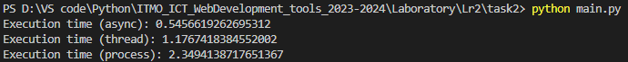

Задача 2
Напишите программу на Python для параллельного парсинга нескольких веб-страниц с сохранением данных в базу данных с использованием подходов threading, multiprocessing и async. Каждая программа должна парсить информацию с нескольких веб-сайтов, сохранять их в базу данных.
Async \ Await
import asyncio
import aiohttp
from bs4 import BeautifulSoup
from urls import urls
from db import add_page, Page
async def fetch_page_title(session, url):
async with session.get(url) as response:
html = await response.text()
soup = BeautifulSoup(html, 'html.parser')
return soup.title.text.strip()
async def parse_and_save(session, url):
title = await fetch_page_title(session, url)
try:
page = Page(title=title)
add_page(page)
except Exception as e:
print(f"Error while adding page: {e}")
async def main():
async with aiohttp.ClientSession() as session:
tasks = [parse_and_save(session, url) for url in urls]
await asyncio.gather(*tasks)
if __name__ == "__main__":
import time
start_time = time.time()
asyncio.run(main())
print("Execution time (async):", time.time() - start_time)
Threading
import threading
import requests
from bs4 import BeautifulSoup
from urls import urls
from db import add_page, Page
def parse_and_save(url):
response = requests.get(url)
soup = BeautifulSoup(response.content, 'html.parser')
title = soup.title.text.strip()
try:
page = Page(title=title)
add_page(page)
except Exception as e:
print(f"Error while adding page: {e}")
def main():
threads = []
for url in urls:
thread = threading.Thread(target=parse_and_save, args=(url,))
threads.append(thread)
thread.start()
for thread in threads:
thread.join()
if __name__ == "__main__":
import time
start_time = time.time()
main()
print("Execution time (thread):", time.time() - start_time)
Multiprocessing
import multiprocessing
import requests
from bs4 import BeautifulSoup
from urls import urls
from db import add_page, Page
def parse_and_save(url):
response = requests.get(url)
soup = BeautifulSoup(response.content, 'html.parser')
title = soup.title.text.strip()
try:
page = Page(title=title)
add_page(page)
except Exception as e:
print(f"Error while adding page: {e}")
def main():
processes = []
for url in urls:
process = multiprocessing.Process(target=parse_and_save, args=(url,))
processes.append(process)
process.start()
for process in processes:
process.join()
if __name__ == "__main__":
import time
start_time = time.time()
main()
print("Execution time (process):", time.time() - start_time)
Результаты сравнения
 Асинхронное программирование: Подход async оказался самым быстрым из-за того, что он предназначен для исполнения I/O-bound задач (коей и является http-запрос страницы)
Многопоточность: Подход thread оказался немного медленнее подхода async.
Многопроцессорность: Подход process же снова оказался на последнем месте, поскольку он не предназначен для данного типа задач. При его использовании появляются ощутимые расходы на создание процессов и управление ими
Выводы
В заключение, выбор подхода зависит от характера задачи. Для задач, ограниченных вводом/выводом, асинхронное программирование или многопоточность могут быть более эффективными. Для задач, ограниченных процессором, многопроцессорность может быть лучшим выбором.